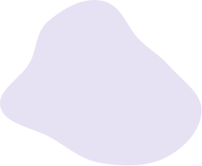
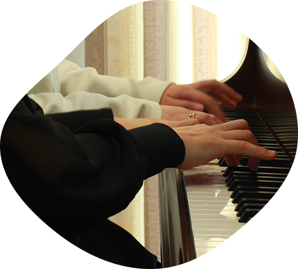
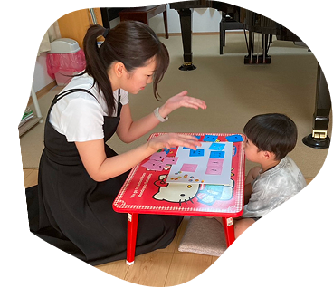
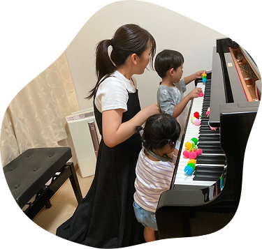

広島県東広島市高屋町郷
TEL : 080-1948-0304


『弾けた！』のよろこびを一緒に味わえる
レッスンを大切にしています。
講師
藤脇 英理子
講師
藤脇 英理子
広島県江田島市出身、見真学園広島音楽高等学校卒業。
くらしき作陽大学音楽学部音楽学科ピアノ専修卒業。
第4回ベーテンピアノコンクール全国大会入選。
親鸞聖人750回大遠忌法要記念創作ミュージカル「しんらんさま」にてピアノ伴奏をつとめる。
くらしき作陽大学・作陽短期大学、卒業・修了演奏会に出演。
これまでに木戸恵子、屋敷京子、川岡優子、土居里江、室内楽を重利和徳の各氏に師事。
指の形やきれいな音の出し方を、
一人ひとりのペースで
音をよく聴く力を育てて、演奏をもっと
豊かに
書いて覚えて、楽譜がすらすら
読めるように！
ゲーム感覚で、楽しくリズム感を
身につけます
月4回（48回）
6,000円 / 月
月2回（隔週）
3,000円 / 月
ワンレッスン
1,500円 / 回
「毎週は難しいけど、ピアノは続けたい」
という方も大歓迎！
隔週や月数回など、レッスンの回数は
ご相談に応じて決められます。


住所
〒739-2124
広島県東広島市高屋町郷727-1-3
カーサフェリーチェ郷6号棟
TEL : 080-1948-0304
どちらからでも気軽に
お問い合わせください！